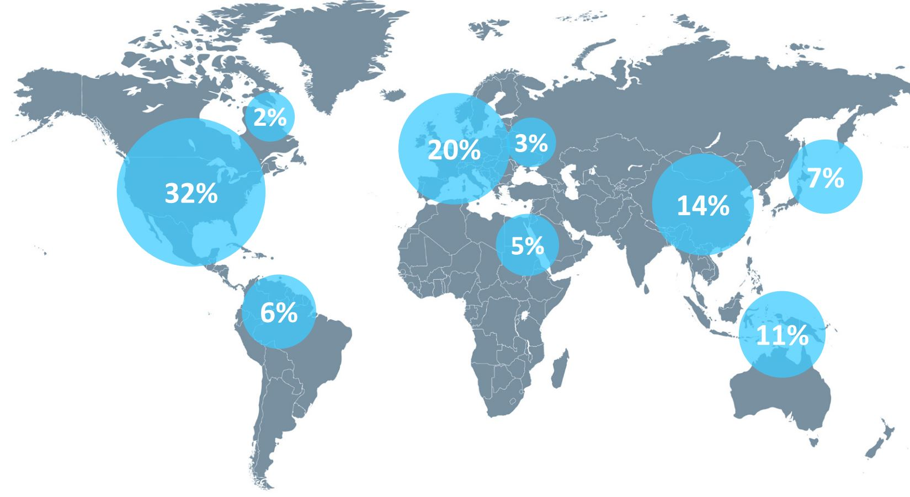
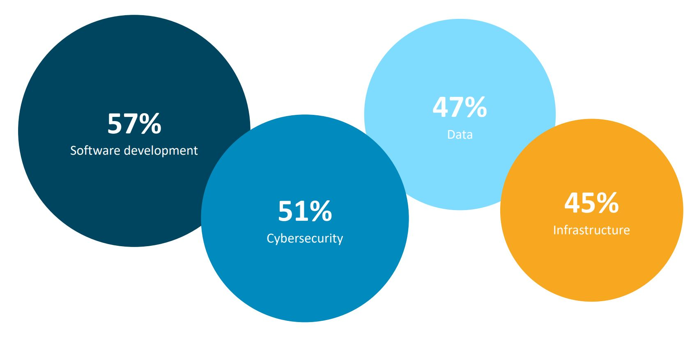
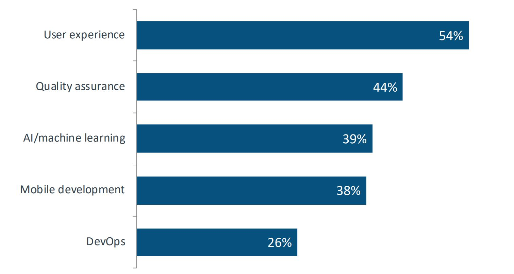
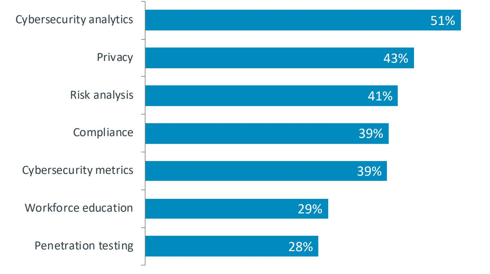
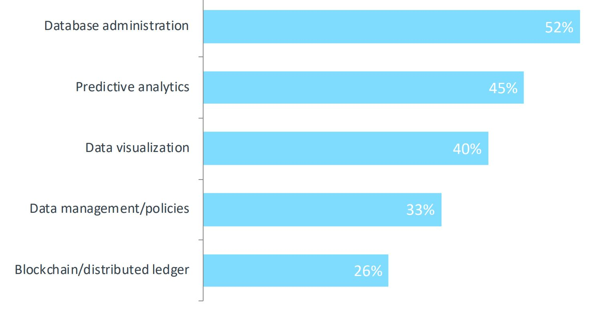
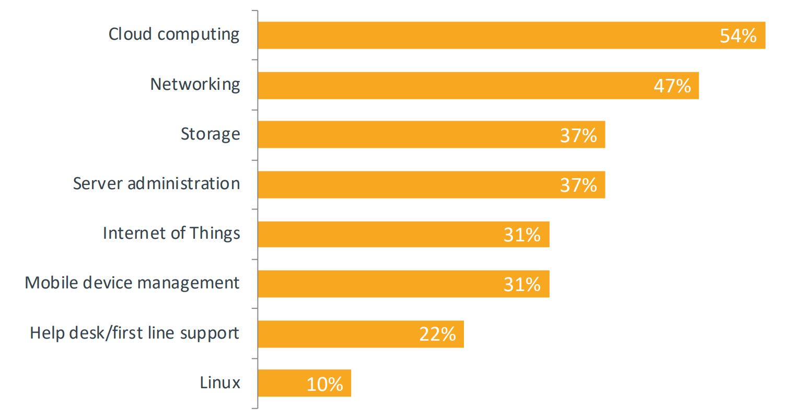

IT, in other words Information Technologies nowadays are the most popular and most demanding growing industry in the world. How IT could be categorised and why is it so important in modern business? I researched and found some statistics in the Computing Technology Industry Association article: "The global information technology industry is on pace to reach $5.2 trillion in 2020, according to the research consultancy IDC." [1]. Let's analyse the map below that represents information technology percentage globally. The United States of America reaches 32% of the IT market use approximately "1.7 trillion dollars" [1], the 2nd part of the world in Western Europe, China, New Zealand, Japan, South America, United Arab Emirates, and East European countries.
But why are businesses spending so much money in the IT industry? To answer this question I would like to view four IT pillars that CompTia is in demand right now. If we look at the image below, each area is colour coded, each circle displays data in percentage for the upcoming year, for example, Software Development has almost 60%, Cybersecurity, Data, and IT Infrastructure about 50% of company focus.
I introduced you with all areas that are suffering the most but this time I would like to draw your attention to the details of each area. Seems Software Development User Experience is emerging and is necessary for the website or mobile applications. Artificial Intelligence and Machine Learning the average necessity and Development and Operations are least important.
If we consider the Cybersecurity section, it is slightly expanded than the previous area of software development probably because every software has to be protected. We definitely can not imagine any business without Cybersecurity analytics, who in this case is the most required. Privacy comes second as the most valuable for business. If we think about it, any data inserted in the registration form is sensitive and has to be protected by cyber specialists. Strangely enough Penetration testers are least significant. They must test software inside the company, test bugs, and computer viruses., find software weaknesses. "Penetration testing also called pen testing or ethical hacking is the practice of testing a computer system, network or web application to find security vulnerabilities that an attacker could exploit"[2].
Data Science is another area that involves database administration who "uses software to store and organize data, such as financial information or customer shipping records" [3]. If we concentrate on social media like Facebook, how many users are visiting the site per second? Not sure, but according to Facebook user and demographics statistics "There are 2.375 billion monthly active users"[4], which is a huge number. Now it is clear why database analytics comes in second and data visualization in third place. Finally, Blockchain is last in data management. It could be because it "began to emerge as a real-world tech option in 2016 and 2017" [5].
What about infrastructure? The image represents cloud computing as number one are which should be focused on most. Everything nowadays goes on a cloud where virtual data is stored. Networking is a second priority because all data requires internet connection otherwise it is impossible to get access to the cloud. But where are we going to store data? Cloud itself is very complicated and where and how we would like to store, we should think about "Amazon, Google, Microsoft or Apple iCloud" [6]. After this Internet of Things and mobile device management becomes fifth as most important. In our modern world, everything is made from electronics from home appliances like washing machines, microwaves to tv, computer or mobile phone.
[1] https://www.comptia.org/content/research/it-industry-trends-analysis
[2] https://searchsecurity.techtarget.com/definition/penetration-testing
[3] https://www.careerexplorer.com/careers/database-administrator/
[4] https://www.brandwatch.com/blog/facebook-statistics/
[5] https://www.computerworld.com/article/3191077/what-is-blockchain-the-complete-guide.html/
Firstly I would like to explain what does the digital project means? The University of Nebraska-Lincoln in their article writes: "The digital project comprises the planning, preparation, and production..." [1]. I agree with this author because I am always planning my projects before starting doing it. I think it is one of the skills that must be considered before any project. My preparation would be good research about the subject that I would be planning to work on. Production is the third stage after researching. Once I have all the relevant materials, I can begin working on the project.
I would like to select a digital project to answer questions about methods, skills, resources, and tools. But how to decide what digital projects to talk about? There are so many different IT areas. I would consider those projects that are relevant to my experience. For example, when I started programming, I have chosen C# programming language because I was interested in games. So what skills are needed to complete a successful game? As I mentioned earlier, planning is very important if we want to start any project, in this case, game.
So where to start, if we are desiring to make a successful game? The first is planning. To make good planning, we have to have a strategy. I would advise following the Agile methodology. "Agile software development is a conceptual framework for undertaking software engineering projects" [2]. We are not going to go into so much detail what Agile does and why is important but here we have to write a plan on how to make a game. I would think of a software development cycle that includes "planning, defining, designing, building, testing, deployment" [3]. It is a very long process but has to be done with specific tools. Personally, for planning I would choose Trello boards because it is easy to use, no tutorials needed.
Then I would clarify the requirements for the game by communicating in a team I work or have a survey online, gather information from game users and game developers. Both opinions are important because the user will tell you what kind of game he is interested in the most and game developers will share their experience knowing what methodology they had in mind when they were creating a game, what tools used it.
After this section, I would start designing a game with Unity 3D [4]. I could draft scenes on the paper first so I can have a whole picture of what should happen in a game. When I would start developing a game, my skills would be to be able to use Unity 3D. I should draw three-dimensional forms, design characters of the game, select background images or features, insert some sound. I should create buttons as well for the user or mouse click events so a game player could interact with digital objects in the game. After this I could use Visual Studio to write C# code, programming is necessary for the game to work. For example, I am imagining shooting scenes, where the game player has to click with a mouse on the object he wants to shoot.
Of course, we have to test the code before deployment, so any errors could be fixed, any issues solved before the game is in use. In general to make this game project we have to have a lot of patience because coding takes a lot of time, especially the testing part, where we have to fix code bugs. Also, I would say, we have to be determined to make this project with good quality. To do that we have to make a lot of renderings which are consuming a lot of memory space for computers, so plan if you have the right computer with an external hard drive. Another thing to consider the cost of software, if you can download free trials, decide if the game is going to be big or small because sometimes you have to spend more time than you planned because to create every scene, takes a large amount of time but everything is possible and the project can be successful with right tools and attitude.
[1] https://cdrh.unl.edu/articles/basicguide/digitalproject
[2] https://syndicode.com/2017/10/05/top-6-software-development-methodologies/
I already briefly mentioned Agile methodology in the previous question but this time I will expand it because Agile is one of the planning project methodologies. The reason I focusing o this is because recently I have learnt about it during my training session in Manchester and I would like to share my knowledge. I would like to compare the Agile and Waterfall methodology because they are the main techniques approved by the business.
"Agile is a time-boxed, iterative approach to software delivery that builds software incrementally from the start of the project, instead of trying to deliver it all at once near the end"[1]. What does iteration mean? In simple terms "It works by breaking projects down into little bits of user functionality called user stories, prioritizing them, and then continuously delivering them in short two week cycles"[1]. Agile advantages are that it focuses "on clients, who can interact with a project at any time, this methodology cares about quality, has incremental development process and it is very organized, which decreases risks" [3]. Disadvantages of Agile is that it is not suitable "for small projects, the team has to make the right decisions at each increment" [3].
The waterfall is opposite what agile does. "The Waterfall model is a sequential development approach, in which development is seen as flowing steadily downwards" [2]. The advantage so Waterfall is that it is "easy to manage" [3], because once tasks are set up, it can not be changed so the team can focus on completing tasks, so, for this reason, it is a quicker way of finishing work and it suits for small projects. It is "adaptable for shifting teams and it is well documented, less documenting dependencies" [3]. However, the disadvantages of Waterfall are that client is not able to interact with the project, not many changes are available.
I used Trello Board to organize my work for website development. I had to decide if I want to make only front end development or include back end as well. I already learnt JavaScript from a group project of game development but due to a short time, I have to stick with Front End. Mainly focus on website design, think about Html structure, use CSS for designing my pages. I am attaching my website Trello link [4] so you can see my plan of the website project and my game Trello link [5] to view group planning. There are three parts of 'To do', 'Doing' and 'Done'. Each part represents planning what do I have to do, what am I working on and what has been done so far. It was a great tool to navigate myself, where I am at the time, to update the plan if required, if any changes, add new features on Trello or delete if I changed my mind not to do a certain task.
[1] http://www.agilenutshell.com/
[2] https://syndicode.com/2017/10/05/top-6-software-development-methodologies/
[3] https://hygger.io/blog/the-difference-between-agile-and-waterfall/
[4] https://trello.com/b/kU5kAXqt/kristina-website-development
Many risks might impact digital projects. I read some information about risks in Agile management. For example, one of the issues could be "poor communication among professional IT engineers and project managers" [1]. I think I already had experienced during our group project of game development with the Code nation team. We were lucky to have a virtual environment, where we managed to communicate on Slack, Google Hangouts, Zoom. We were able to share each other desktop screens and support each other over the camera. But sometimes even you have all technology in the world, some team members are not willing to engage. I remember undergraduate studies when we had a group project to design interior spaces. My members of the group went on holidays during Christmas and did not support me at that time, we had few weeks off to complete the project, so I had to work extra hard to finish it in time. Of course, the project was successful in the end but lack of communication sometimes can cause problems.
We already covered how important planning is but to follow the plan is another matter. Sometimes risks occur when people are not sure where to start. In this case to have a team leader would be an advantage because he could make sure everyone is on track and knows what are doing. For example, when we started our Code Nation game project, I remember our first day was not so productive because we did not know where to start, we had to step back and do research first of available games. I remember suggesting to come with the first ideas of the game for the next day morning. We followed my advice and everyone had something to share. We were full of ideas the next day, had a full conversation together. The same day we made a plan of what we had to do. When there is a group of people, discussions take more time of everybody agreeing with tasks. I think we managed the project well. However, sometimes poor project management could lead to failure. I had one situation during my previous coding training when we had to deliver a presentation in a few hours. Our group was not willing to communicate well, then nobody made a plan to follow, spent way too much time on discussing irrelevant topics, and when we did not have enough time to finish the presentation, was time to present it and due to poor management was not succeeded very well. I tried my best to engage with people, tried to give ideas but people prefer to use their ideas instead. It was kind of not willing to support each other or do only their part and work individually. Due to time pressure, we could not manage to follow the plan and deliver a good presentation.
[1] https://reqtest.com/agile-blog/common-reasons-projects-fail/
If I had to apply for a specific job, definitely I would do good research beforehand. It all depends on the specialty. Let's say I am interested in Full-stack website development and not sure if I have all the right qualities to match an employer. First of all, I would read a few different company requirements for the job, then I would choose the most appropriate. I would check what kind of experience is required. Is a job for an apprentice, junior developer or advanced programmer? Probably I would choose the junior developer's description then carefully analyse each requirement. Normally full-stack developer has to know both design and programming. Front end development responsible for user interface and back end - for the server-side. How would I select the right technologies? I think I would match my skills with the employer because most of the programming jobs require at least one object-oriented programming language like Java, C# or Python. Well, I already learnt JavaScript with Code Nation, so it would make sense if I would choose Node.js for a back end development. Also for the front end, I am working with HTML and CSS at the moment, used JavasCript for the game. Of course, I would use those skills to apply for website development. Besides, I am familiar with Python and Java syntax as I have done some exercises before, some projects as well. I would apply for jobs where those languages are in demand. Only I have to enhance my skills with JavaScript frameworks like "Angular.js, React.js, Vue.js" [1].
And regarding IT systems, I would use the Microsoft Operating system because "80 percent of the desktop and laptop world, primarily a Windows user" [2] and iOS is less popular. I prefer windows but I do not mind switching to iOS if needed because, for example, my laptop is mac just I have the Bootcamp installed so I can have Windows as an operating system. I made this decision during my undergraduate studies when I had to use AutoCAD. Some software works better on Windows especially gaming development but iOS has nice graphics and it is convenient to work with Mac new designs instead. However, an important difference between Windows and Mac is security. One of the blogs was writing that "Apple’s hard line on privacy means you’re less likely to find your photos and data out in the wild. Windows has dramatically improved over the years, but you’ll still want to be well versed in privacy and security to use it as safely as you can a Mac" [3]. It is an individual choice for individual needs but I am flexible, I can work on both - Windows and iOS, even Mac is safer, I would choose Windows as I am getting used to this operating system.
[1] https://hackr.io/blog/best-javascript-frameworks
[2] https://uk.pcmag.com/software/118469/macos-vs-windows-which-os-really-is-the-best
I used the Trello board and GitHub once before started Code Nation training, when I had some training in Java Programming. I was happy to use those tools again because it is easy to follow. Trello is "is a collaboration tool that organizes your projects into boards. Trello tells you what's being worked on, who's working on what, and where something is in a process" [1]. I did the same, created a Trello account for free, created a board, named my first board as "Jungle Rumble Game" for group game project and the second board - "Kristina Website Development" for my website project. How it helped me to plan? I think it was very useful visual support because, I organised each task to the "To Do" list, then when I started working on a particular task, I moved a card to "Doing". I had a few tasks that I was working at the same time as researching and writing for example or developing a website on the VS Code. After I completed each task, I moved this card to the "Done" list. It was very important for me to follow the plan to finish my project on time.
I was introduced to GitHub before once and I already used it for my Java portfolio. This time I had to submit my work on GitHub again, which makes professional and accessible to employers. "Git is a version control system that lets you manage and keep track of your source code history and GitHub is a cloud-based hosting service that lets you manage repositories" [2]. There are ten steps on how to start working with GitHub:
[1] https://help.trello.com/article/708-what-is-trello
[2] https://blog.devmountain.com/git-vs-github-whats-the-difference/
[3] https://product.hubspot.com/blog/git-and-github-tutorial-for-beginners
What does GDPR stand for? GDPR is "a Guide to the General Data Protection Regulation" [1]. I found one financial company called Deloitte who published its GDPR online. I believe every organisation has its data policies and practices to comply with GDPR. Let's dive into the guidelines of GDPR. Number nine of Deloitte GDPR rule is about "security and breach notification" [2], number seven is a rule of "data protection" [2], and number one is "Data Portability" [2].
Regarding security and breach, It says: "Secure the data you process and take a risk management process" [2]. I agree that we are responsible for securing the data that we are using, we are always taking a risk of anything to happen to this data. We should remain with strong passwords when logging into different accounts. Security is measured as very important and should be taken seriously. "Notifying the breach to the supervisory authority is one of the elements of your response, but Responding to the breach should be, taking into account all actions that need to be taken care of: fighting possible intruders, establishing extent of the damage and restoring the situation be normal" [2]. I understand this as we should act straight away if any intrusion occurs, of course, we must inform our management about it but it is more important than we would act immediately and respond with care. We should be trained what to do in this scenario.
"Data Portability is the ability and capacity to export data collected or stored digitally concerning a data subject, the ability to receive data concerning, the data subject and to allow another controller to receive portable data" [1]. For example, we may are be using computer programs to transfer data from our office computers to another device or another location. It is always a risk of losing data because this particular computer program is not protected, hackers could steal all data. In this case, we must comply with data protection by keeping information confidentially, protect from external access. However, "Data Protection Authorities (DPA) may request access to all personal data and all information necessary for the performance of its tasks" [2], so it should provide required data to DPA.
There is a list of GDPR constraints that I would like to share:
The companies are not allowed to use customer sensitive personal data without their consent anymore just to improve their sales for marketing purposes. The person has the right to be forgotten and the company cannot keep their data in their database. "This GDPR prevents the digital marketing companies to improve their digital products" [4], they have no data anymore, they cannot analyse what people admire. The main thing is that before analytics have analysed and collected the data to improve digital products and provide services or products of what people like. To collect and process the data, the companies must ask for user consent, which can be called the right to be notified.
Nowadays more enterprises are moving to the cloud. "This can have big advantages for an enterprise: it also allows for better optimization of IT resources because cloud solutions are almost unlimited scalability and have great flexibility". Companies like Google, Amazon or Apple providing their cloud services and most of the digital companies are using those services. According to Deloitte "The cloud service provider will process personal data, which are stored within their databases or servers, on your behalf: the controller. The cloud service provider cannot do anything with your data unless you instruct them to do so and the data remain within your controllership" [2]. It means that you have the right to protect your data, even cloud services physically responsible for your securing your data. But you have a right to give access to them if you are planning to share particular information. It is a good thing, if data would leak from a company without your permission, then you know it is illegal.
[2] https://www2.deloitte.com/content/dam/Deloitte/lu/Documents/risk/lu-deloitte-gdpr-report.pdf
[3] https://gdpr-info.eu/art-23-gdpr/
[4] https://ec.europa.eu/info/law/law-topic/data-protection/data-protection-eu_en